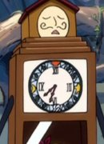

Masaki Kawanabe is a Japanese actor and voice actor. He voice several characters in the Fairy Tail anime series.
- Gender: Male
- Birthday: January 24, 1972
- Hometown: Saitama, Japan
- Hobbies: Driving and Illustration/Drawing
- Favorite Color: Red

|
|---|
| |
Masaki Kawanabe is a Japanese actor and voice actor. He voice several characters in the Fairy Tail anime series.
|
|
|---|
|  | Horologium |
|
Horologium is a celestial spirit that is owned by Lucy Heartfilia. He keeps people safe within his clock body and narrates those inside of him. He protect the person inside. He can transport people into the Spirit World. |
| Sagittarius |
|
Sagittarius is a celestial is a celestial spirit who represent the Constellation of the Archer. He is skilled archer. Sagittarius is very formal and takes requests literally. |
Go Back to Main Page |
Go Back to Homepage |
|
|
|
OR |
|